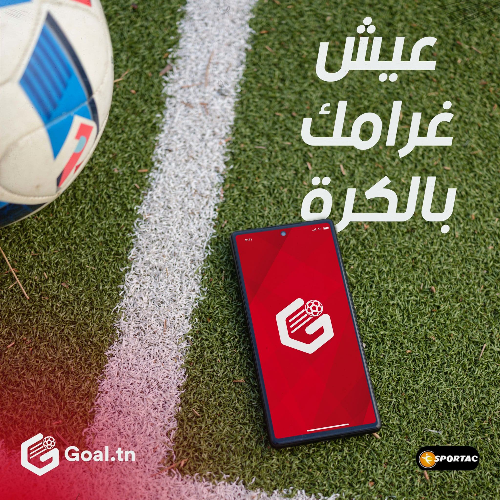
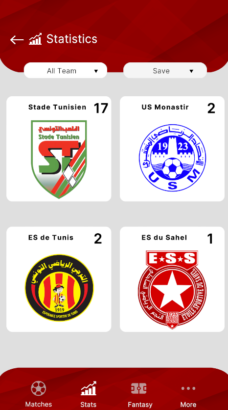
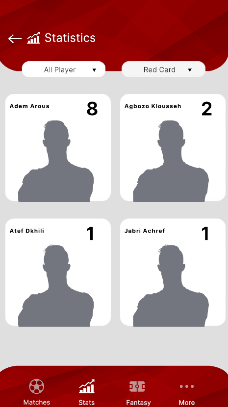
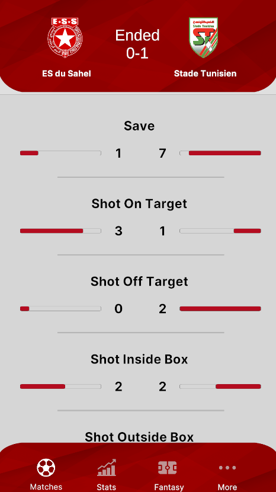
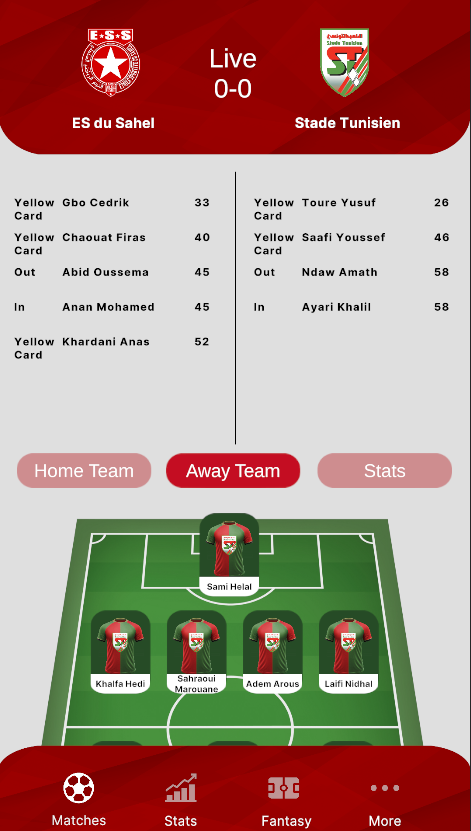

Développement d’une application cross-platform dédiée au suivi de la ligue tunisienne de football, intégrant la consultation des scores, classements, statistiques, ainsi qu’un mode Fantasy permettant aux utilisateurs de créer et gérer leurs propres équipes. Unity , Mysql , Html , Css , Adobe Xd , Photoshop , Illustrator




